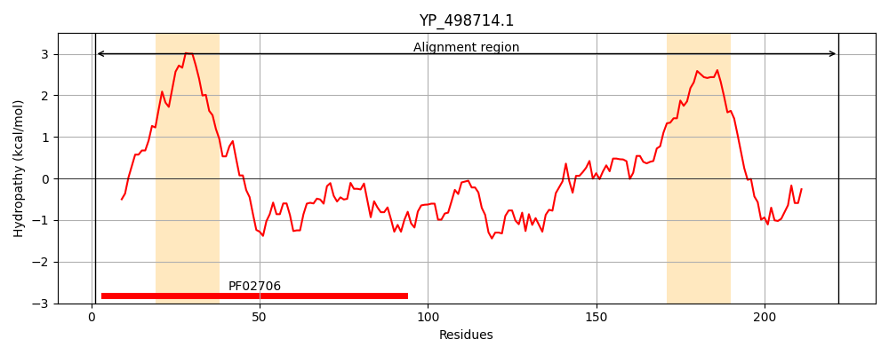
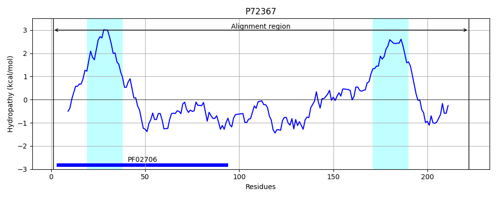
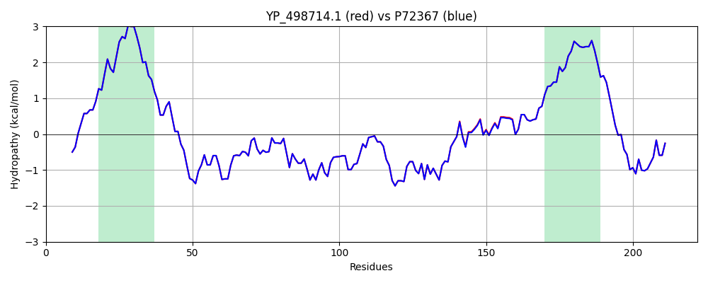

Hit Accession: P72367
Hit TCID: 8.A.3.2.4
Hit Description: gnl|BL_ORD_ID|11340 gnl|TC-DB|P72367|8.A.3.2.4 Capsular polysaccharide type 8 biosynthesis protein cap8A OS=Staphylococcus aureus GN=cap8A PE=1 SV=1
Mach Len: 222
e:0.000000
Query TMS Count : 2
Hit TMS Count: 2
TMS-Overlap Score: 2.000000
Predicted Substrates:None
BLAST Alignment:
Score: 1073 , Bit scores: 417 bits, E-value: 6.2e-151, Alignment length: 222, Percentage identity: 99
Query: 1 MESTLELTKIKEVLQKNLKILIILPLLFLIISAIVTFFVLSPKYQANTQILVNQTKGDNPQFMAQEVQSNIQLVNTYKEIVKSPRILDEVSKDLNDKYSPSKLSSMLTITNQENTQLINIQVKSGHKQDSEKIANSFAKVTSKQIPKIMSVDNVSILSKADGTAVKVAPKTVVNLIGAFFLGLVVALIYIFFKVIFDKRIKDEEDVEKELGLPVLGSIQKFN 222
MESTLELTKIKEVLQKNLKILIILPLLFLIISAIVTFFVLSPKYQANTQILVNQTKGDNPQFMAQEVQSNIQLVNTYKEIVKSPRILDEVSKDLN+KYSPSKLSSMLTITNQENTQLINIQVKSGHKQDSEKIANSFAKVTSKQIPKIMS+DNVSILSKADGTAVKVAPKTVVNLIGAFFLGLVVALIYIFFKVIFDKRIKDEEDVEKELGLPVLGSIQKFN
Sbjct: 1 MESTLELTKIKEVLQKNLKILIILPLLFLIISAIVTFFVLSPKYQANTQILVNQTKGDNPQFMAQEVQSNIQLVNTYKEIVKSPRILDEVSKDLNNKYSPSKLSSMLTITNQENTQLINIQVKSGHKQDSEKIANSFAKVTSKQIPKIMSLDNVSILSKADGTAVKVAPKTVVNLIGAFFLGLVVALIYIFFKVIFDKRIKDEEDVEKELGLPVLGSIQKFN 222 | Protein Hydropathy Plots: |
|---|
|  |  |
Pairwise Alignment-Hydropathy Plot:
|
|---|
|  |